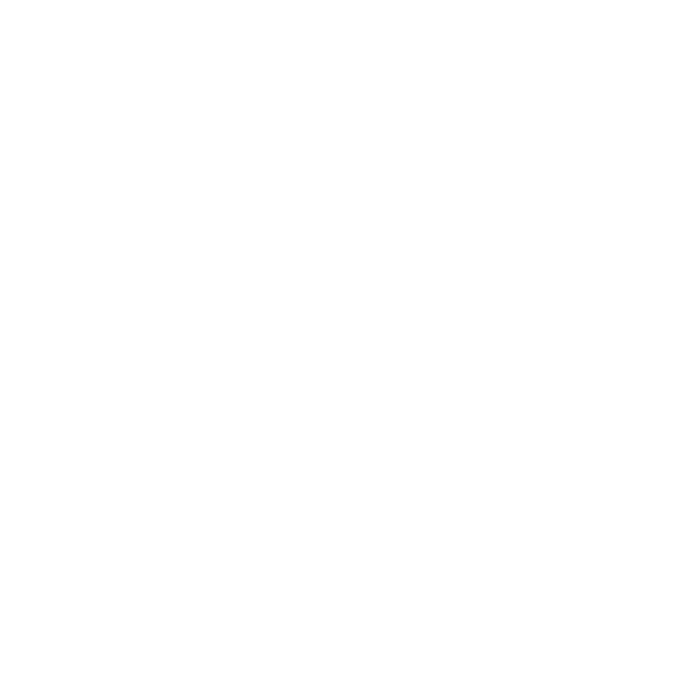

AN EXPANSE OF SKY
“It’s scary at first, but soon all you’ll feel is bliss.”
(W1)1-24-1, or “An Expanse of Sky”, is an indoor spatial phenomenon which recreates a section of Latu’s troposphere within the confines of a room. (W1)1-24-1’s permanent containment chamber is itself a spatial anomaly as it was built; a space of 13 m x 10 m manifested between hall 43A and hall 3B on the Still Abyss Floor’s light containment zone during the scheduled Dredge on [REDACTED], 5094. The walls around (W1)1-24-1’s permanent containment chamber extend upwards and downwards by 50 m before ‘fading into the sky’. (W1)1-24-1 itself (the sky) extends seemingly infinitely upwards and downwards. If one were to fall down, they’d fall for 120 seconds before looping back to the point where they first fell in.
It should be noted no anomalous behaviour occurs while falling within (W1)1-24-1; contact with a physical object after reaching terminal velocity in (W1)1-24-1 will (most likely) result in one’s immediate demise.